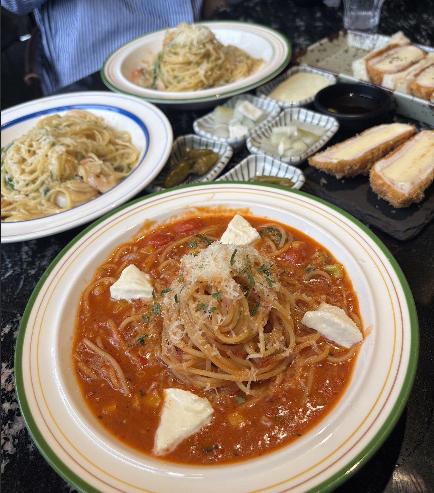

카츠 헤세드
어린이공원역에 위치한 '카츠 헤세드'에 다녀왔다. 대학교 친구들과 함께 간 곳인데, 정말 맛있었다. 특히 카츠산도를 이때 처음 먹어봤는데, 정말 맛있었다.
저의 일상을 소개하는 블로그입니다.
어린이공원역에 위치한 '카츠 헤세드'에 다녀왔다. 대학교 친구들과 함께 간 곳인데, 정말 맛있었다. 특히 카츠산도를 이때 처음 먹어봤는데, 정말 맛있었다.
원래 라멘은 항상 느끼해서 다 먹기 힘들었는데, 매운 라멘을 먹고 나서부터는 맛있게 잘 먹게 되었다. 혹시 많이 매울까 봐 기본 돈코츠 라멘만 시켜 먹었었는데, 매운 라멘이 느끼함도 별로 없어서 맛있었다.
햄버거도 원래 야채를 별로 좋아하지 않아 양상추만 먹었는데, 이 햄버거 가게는 양파도 빼지 않고 먹을 정도로 맛있었다. 물론 양파가 두 개 들어간다고 해서 한 개만 넣어달라고 했지만, 그래도 정말 맛있었다.
친구들과 과제를 하면서 먹었다. 딸기 타르트가 너무 예쁘게 생겨서 안 시킬 수가 없었다. 타르트와 곶감으로 만들어진 간식은 친구들과 나눠 먹었다.
여기는 음료수도 좋았지만, 자리가 굉장히 편했다. 소파 자리여서 편하게 기대 친구들과 수다를 떨었다. 친구의 아이스크림도 한입 뺏어 먹었다.
여기서는 바닐라 아이스크림이 들어간 커피를 시켰다. 예전에 친구가 시켰을 때 한입 뺏어 먹은 적이 있는데 굉장히 맛있어서, 두 번째 방문 때 친구가 시켰던 메뉴로 시켜서 먹었다. 역시 음식은 한입만 먹는 게 더 맛있는 것 같다.